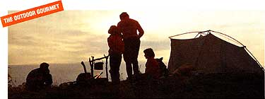
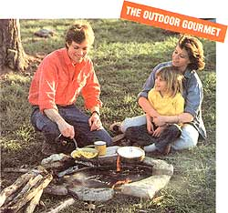

L ET'S FACE IT: GOURMET backpacking is an oxymoron. When you're bereft of running water, four-burner stove, refrigerator and Cuisinart, when everything you eat and everything you cook with must be carried on your back for miles, you make some compromises with taste and nutrition. Fresh tomatoes may taste better than sun-dried, but they weigh a ton and turn to pulp in a backpack. Rolled oats may provide more fiber than instant ones, but the latter require only that you add boiling water to your Sierra cup-no stirring over a stove that gulps the fuel you've packed in, no pot to clean. On a cold dawn with 10 miles of trail in front of you, these things matter.
Of course, you don't have to subsist on hardtack and jerky, either.
It's partly a matter of definition. If you shop for "camping food," you're limited to an outdoor store's collection of freeze-dried dinners. You'll eat better if you fill your pack with food that meets a few basic criteria, however it's labeled and wherever you find it: outdoor store, supermarket, deli, natural foods store, ethnic market or your own pantry and garden.
1. Lightweight. Weight is one reason backpackers obsess about dehydrated food; water is heavy. Compare a cup of dry milk powder to an equivalent quart of milk.
The standard goal is to carry two pounds of food per person per day. Clearly, the longer the trip, the more critical the weight of the food-and the containers-becomes. Short treks allow a few fresh vegetables and small cans.
2. Nutritious. Even moderate backpacking is strenuous work, raising your daily nutritional needs by a good 1,000 calories. Really tough going requires more. Although many hikers eat more than usual and still return home minus a few pounds, the wilderness is a good place to have your wits about you and a bad place to diet. Feeling weak and dragged out will dull your judgment and your enjoyment.
3. Quick, tasty and easy to prepare. Come evening, you're gonna be tired and hungry. And with only a one-burner camping stove, the number of pans always matters.
4. Long keeping. A frozen steak in a zip-top bag will thaw in your backpack in time for dinner the first night. Frozen precooked chicken will keep in the cool center of your pack for the second evening. After that, you'll need food that requires no refrigeration-which is the other advantage of dried food.
When breakfast is hurried, perhaps eaten in the dark because a long, hard hike looms ahead, quick and easy foods are mandatory: commercial or homemade granola bars, filling cold cereal or, perhaps most satisfying, quick hot cereal-individual packets of instant oatmeal or any of the quick-cooking cereals on the market. Dried fruit, either straight from the bag or soaked in water overnight, and the best tea, freeze-dried coffee or cocoa mix on the market round out the meal.
Then again, there's no reason not to have smoked salmon and bagels, if you prefer.
Hearty Camp Cereal. At home, combine 1/3 cup quick oats, 1 tablespoon wheat germ, 2 teaspoons toasted sunflower seeds, 2 tablespoons dried fruit (raisins, snipped apricots, chopped dates, banana chips, etc.), 1 teaspoon brown sugar, 1/4 teaspoon cinnamon, and dry milk equal to 1 cup reconstituted. Pack in plastic bags. In camp, place cereal in cup or bowl, cover with boiling water, and stir until soft.
On leisurely mornings, unpack your envelopes of just-add-water pancake mix-flavors range from blueberry to buckwheat-and a tiny bottle of syrup or jam. In fact, any baking mix, made into a thinnish batter, can be cooked in pancake form: muffin mix (a kaleidoscope of flavors), coffee cake, corn bread, even gingerbread (also good for an evening dessert). Make one large pancake in your skillet, and then slice it into wedges.
Although some hikers unpack their stove and prepare a hot lunch, most just rummage around in their backpacks.
Cheese. Calorie dense, protein rich, long keeping, cheese is an ideal travel food: Swiss, Gouda, Edam, Havarti, Monterey Jack. And freshly ground Parmesan or Romano jazzes up a bland dinner.
Nut butters and crackers. No one knows why hikers can eat peanut butter and crackers day after day with continued serenity, but they can. Still, you might as well branch out; take cashew or almond butter as well. Crackers must be sturdy (a backpack rivals a blender at turning saltines into crumbs), but there's still a dizzying array of hearty, whole-grain choices.
Sausage. Dry, dense sausages-salami, pepperoni, beef sticks, Thuringer, summer sausage, Spanish chorizo-keep well, taste wonderful at high noon and enliven a dinner of pasta or rice.
Compact breads. The sturdier kinds travel well: dense "cocktail" breads (pumpernickel and rye), English muffins, bagels, tortillas and pitas.
Fresh foods. Unless your trip is so long that you can't afford one extra ounce, do take along a few hardy fruits and vegetables: carrots, celery, cucumbers, fennel, apples, kiwi.
Hot soup staves off hunger until the main meal is ready, helps fill the hiker's prodigious need for liquids and soothes the soul. These days, dried soups in packable foil envelopes line the supermarket shelves: tomato basil, minestrone, asparagus, cauliflower, hot and sour, mushroom, vegetable, French onion. Most require only water and two minutes' cooking time. Repackage those that call for milk: Pour the mix in a plastic bag, and add the equivalent amount of dry milk powder; then stir in boiling water at the campsite.
Traditionally, the main course is a one-dish meal based on complex carbohydrates, with added protein and seasonings. Food manufacturers can help. Markets stock various quick-cooking boxed dinners composed of a starch (rice, pasta, couscous) and dried additions such as cheese, vegetables and sauce-everything from macaroni and cheese to noodles Stroganoff, from Creole rice to tabbouleh salad. Add some of your luncheon cheese or sausage, or some canned meat or fish, and you've got a quick and easy meal. Or you can carry your own rice and pasta and season it with one of the dry sauce mixes available. Most require only water; some need milk (add dry milk and repackage). Choose from curry, pepper, mushroom, white, hunter, Newburg, hollandaise, lemon dill, béarnaise, gravy (brown, chicken, turkey), clam, pesto and Alfredo.
Or you can wing it. Take along a few starches, some portable protein and your favorite seasonings, and toss them in the pot with a practiced hand. Some of the great cuisines of the world-Italian, Spanish, Mexican, Middle Eastern-are based on exactly this principle, and their rice and pasta dishes can be transported into the wilderness in recognizable form.
You might pack along:
Starches: rice (quick white or brown); pasta (whole-wheat or vegetable spaghetti or macaroni, egg or ramen noodles); grains (couscous, bulgur, quick barley).
Protein: In addition to the cheese and sausage you're carrying, try smoked fish, chipped beef, canned fish (tuna, clams, shrimp, oysters, sardines, crab), canned meats (boned chicken, turkey, corned beef) and, yes, jerky.
Seasonings: If you're inclined toward Mexican and Spanish meals, take dried tomatoes, tomato paste (more condensed and thus lighter than sauce; pack it in a plastic tube available at outdoor stores), fresh garlic, onion flakes, herbs-cumin, coriander, saffron, dried red chilies, dried green chilies, all packed in tiny plastic bags singly or in combination-pine nuts, dried shrimp, chorizo (small and spicy sausages, available at Latin markets) and packets of chicken-broth-and-seasoning mix.
If your tastes run to the Italian, try tomato paste, grated Parmesan or Romano, fresh garlic, dried mushrooms, shallots (compact substitutes for both onion and garlic), dried tomatoes, olive oil. (Liquids carry well in plastic bottles from outdoor stores or in 35-mm film canisters.)
Extras: Tuck some of your favorite flourishes into empty corners of your backpack: herbs and spices-dry mustard, thyme, curry powder, cinnamon/nutmeg -soy sauce, sherry, vermouth, honey, Worcestershire, brandy (for soaking the dried fruit).
Clearly, the possibilities are infinite-including these two modest examples.
Mexican One-Step. Measure quick-cooking rice and water into the pan. Then toss in a packet of chicken-flavored broth and seasoning, some dried tomatoes, a little tomato paste, some cumin, onion flakes, dried chilies and sliced chorizo or other sausage. If you're tired of sausage, use a can of chicken, crab, clams or shrimp. Stir, and simmer until done. Pasta Alfredo. Boil pasta in water until almost done.
Drain, and remove pasta from the pan. Add a little water to the pan, sprinkle in some dry milk and ample amounts of grated Parmesan and Swiss cheese cut into small chunks. Stir carefully over a low flame until the cheese melts as much as it's likely to. Return the pasta to the pot, and stir until coated and hot. Sprinkle with black pepper, and serve. Note: As soon as you empty the pot, fill it with water and put it on to heat.
Otherwise, it will be a humdinger to clean.
For a wealth of information and ideas about camp cooking see June Fleming's
The Well-Fed Backpacker
(Random House, 1986, $6.95).
|
 |
 |
|